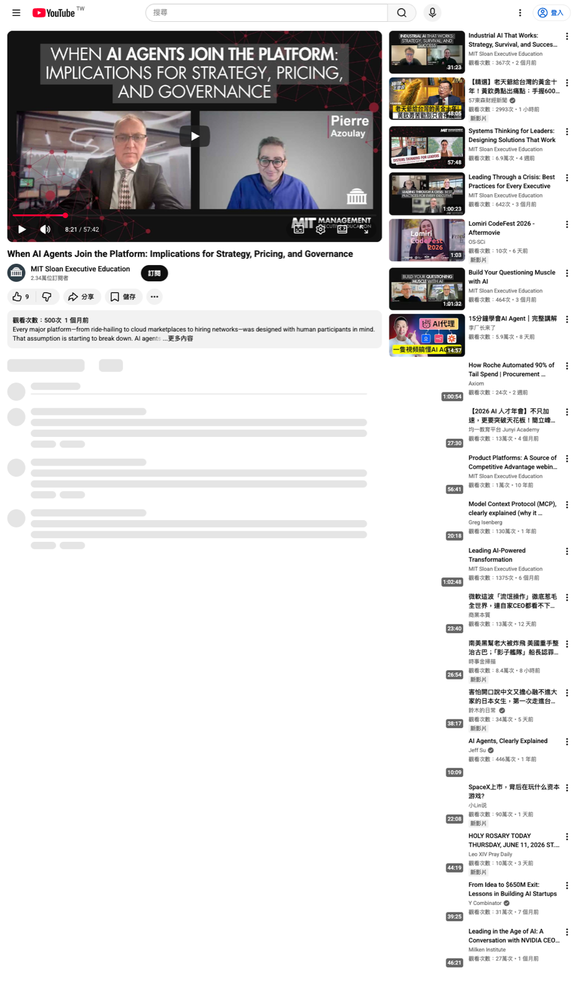
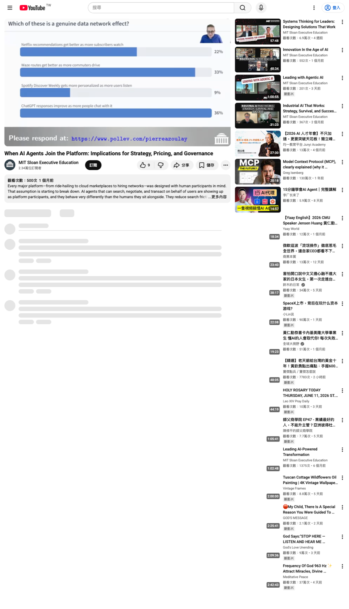

這支影片在講什麼

MIT Sloan 的 Pierre Azoulay 用一場 57 分鐘 webinar，把 AI agents 放回平台經濟學的框架裡看。這個角度有用，因為它避開了單純討論工具功能的路徑，直接問平台經營者最難逃的問題：誰在平台上互動？平台降低了哪些摩擦？平台要管到什麼程度？
他的核心判斷很清楚。AI 沒有讓平台策略失效；AI 讓原本就難的決策更早出現、更難修改，且更容易引發 sides 之間的利益衝突。
平台的判斷：先命名 sides
Azoulay 不把平台定義成已經產生網路效應的東西。那會把成功結果誤當成結構。比較好的定義是兩層：一層是 technology architecture，提供共用基礎與標準介面；另一層是 market intermediation，降低陌生參與者互動前後的摩擦。
車廠常說自己的底盤是 platform，但那多半只滿足技術架構。真正的平台還要組織外部互動，讓一側的參與者能與另一側交易、比較、信任、協調。這也是 Local Motors 這類概念和傳統車廠共用底盤之間的差異。
AI 重排兩種摩擦
平台中介的工作可拆成兩類摩擦。Search costs 是配對前的搜尋、比較、判斷成本；transaction costs 是配對後的付款、合約、排程、信任、爭端與協調成本。
常見直覺是 AI 會降低搜尋成本、增加交易成本。Azoulay 認為這個結論太整齊。AI 可能讓候選名單變長，讓評估更難；也可能讓付款、託管、跨語言交易、爭端初篩更便宜。每個平台要做的診斷是：在自己的市場裡，哪一種摩擦下降，哪一種摩擦上升，背後機制是什麼。
- 條件：AI 讓產生內容、產生申請、產生候選名單的成本下降。
- 機制：原本可用的聲譽訊號被大量 AI 修飾內容稀釋，平台需要新的驗證與排序機制。
- 結果：搜尋看似變快，但評估成本與防詐成本可能上升。
- 驗證：觀察候選品質、交易爭端率、人機驗證成本、reputation system 被攻擊的頻率。
資料護城河：Waze 和 ChatGPT 差在哪

影片裡最值得抓出來的一段，是 data network effect 的定義。Azoulay 的判準是：我的效益是否依賴其他使用者此刻正在貢獻資料。Waze 或 Google Maps 符合這個條件，因為路線品質取決於其他司機現在是否帶著 app 在路上移動並回傳訊號。
Netflix、Spotify、ChatGPT 的資料也有價值，但比較接近 scale effect。更多歷史資料改善集中式模型，模型再服務使用者。若明天停止新增資料，Waze 的體驗會在幾分鐘內變差；推薦系統或語言模型可能還能維持很久。這個差異對投資分析很重要，因為它會影響護城河持久性。
Coring：平台上線前就要做的難決策
Coring 是在第一個參與者加入前，就先決定平台的架構、規則、接入點與控制機制。這和一般產品迭代差很多。產品可以先做小功能再修，平台的 core 一旦讓 sides 形成預期，後面改規則就會傷到某一側。
Uber tipping 是影片中的例子。Uber 起初沒有 tipping，這讓乘客形成一種完整交易體驗：上車、下車、付款自動結束。2017 年加入 tipping 後，乘客把它感受成價格上升，也多了一層心理判斷。關鍵不在 tip 的道德正當性，而在平台多年後改變了早期交易預期。
AI agents 帶來的新 coring 題目
AI agents 讓 coring 多出三個必答題。第一是 agent access：使用者能帶自己的 agent 進平台，還是只能用平台提供的 agent？第二是 agent identity：agent 是否要驗證、累積 reputation、跨 session 存在？第三是 liability：agent 參與交易後出錯，責任落在使用者、開發者，還是平台？
| 決策 | 要回答的問題 | 錯誤代價 |
|---|---|---|
| Agent access | BYO agent、平台自家 agent，或 hybrid？ | 太開可能被外部 agent 重新控制互動；太封閉可能失去外部創新速度。 |
| Agent identity | agent 是否可驗證、追蹤、累積 reputation？ | 沒有身份就難以追責；身份過重又可能提高進入門檻。 |
| Liability | 交易出錯時誰負責？ | 法律還沒完全定型，平台仍需先有契約立場。 |
| Fairness | 沒有 agent 的一側如何被保護？ | 弱勢側若覺得被壓制，會退出平台，傷害網路效應。 |
這些決策會形成 sticky bundle。若一開始允許使用者帶自己的 agent，後面要收回會很痛；若一開始只允許平台自家 agent，可能又限制了外部創新。
平台治理是主功能
Azoulay 提醒，平台經營者其實在管理一個小型經濟體。平台要當法官、監管者與警察，處理 sides 之間的外部性、爭端與系統性投資。
Google Ads 不讓廣告任意放大圖片，是為了平衡廣告主與搜尋者。Intel 推動 USB、PCI，是平台方主導全系統投資。eBay Resolution Center 則處理交易爭端，避免市場被未解決糾紛拖垮。
If you are going to be a platform entrepreneur or intrapreneur, you have to accept that you are going to be responsible for a little sub-economy. — Pierre Azoulay, around 28:18
給 AI 產品與投資分析的檢查表
產品公司
- 先判斷 sides，再判斷是否真的要 platformize。
- AI demo 只證明功能，不證明市場中介。
- 在上線前寫清楚 agent access、identity、liability。
- 檢查每一項 core change 是否讓一側得利、另一側受損。
投資分析
- 問 data moat 來自即時互動、合法排他，還是 pipeline know-how。
- 區分 data network effect 與 scale effect。
- 檢查平台是否有治理能力，而非只靠流量成長。
- 觀察 agent 進入後，search costs 與 transaction costs 的實際方向。
平台治理
- 是否能辨識 human、agent、human-with-agent？
- 是否讓沒有 agent 的一側保持公平？
- 是否能處理 synthetic activity 偽造 critical mass？
- 是否有爭端處理與責任分配規則？
我的整理結論
這支影片的價值在於把 AI agent 的討論拉回平台策略。AI agent 不只是自動化客服或搜尋助手；它會進入平台互動本身，改變 sides 的權力、訊號成本、評估成本與責任分配。
如果要把這套框架用在自己的產品或投資標的上，第一步應該問三題：誰跟誰互動？平台降低哪種摩擦？哪個 core decision 上線後不能輕易改？這三題答不清楚，AI 再強也只是功能；答得清楚，才有機會形成平台。